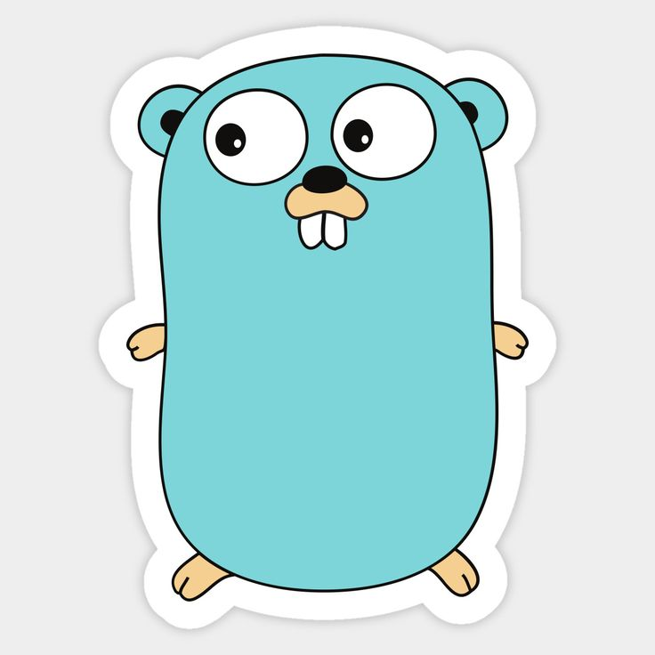
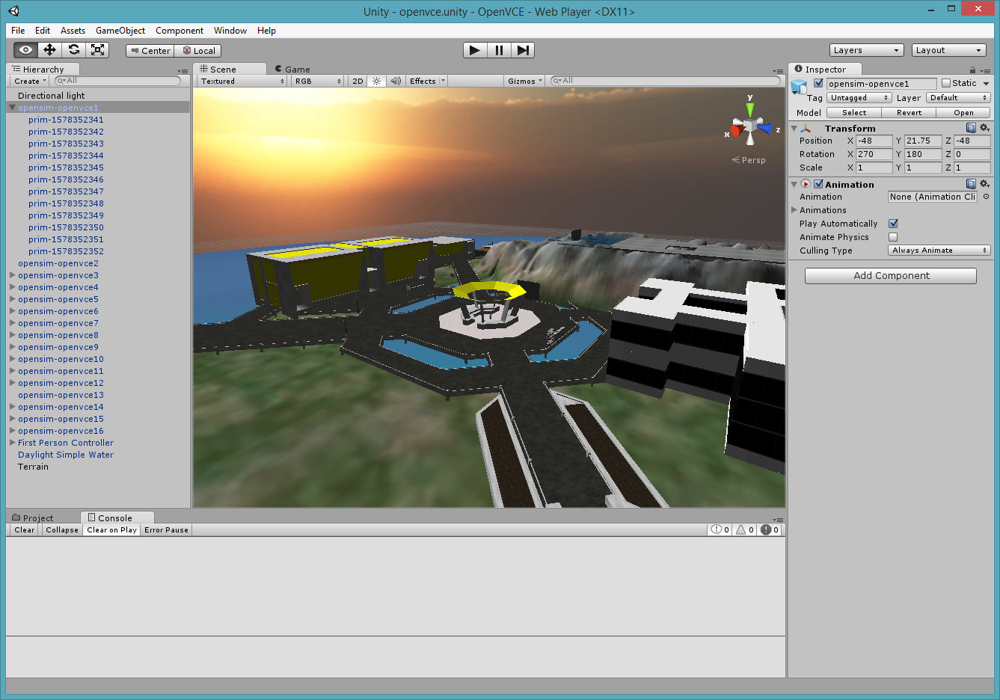
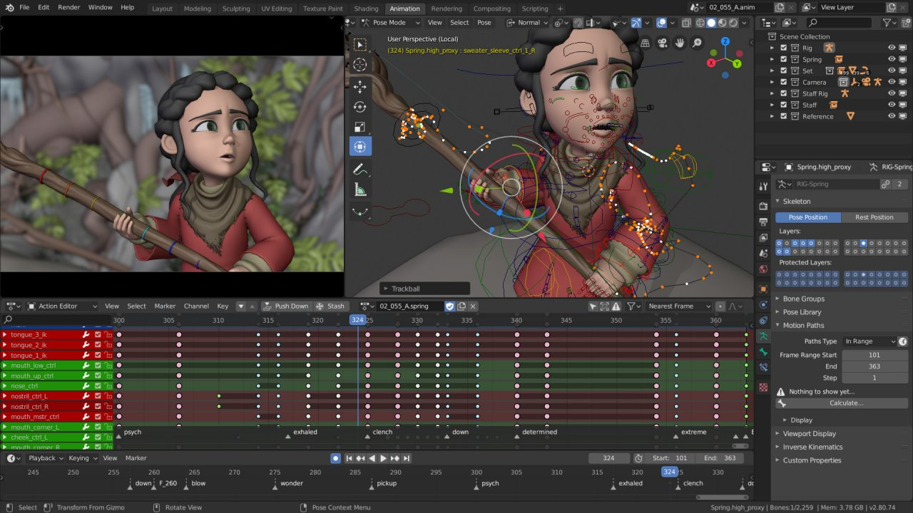

♠ Who is Fredrick ♠
Meet Fredrick: The Maestro of Code and the Global Nomad
In the vast and dynamic realm of digital innovation, let me introduce you to Fredrick—a virtuoso frontend developer whose coding brilliance is matched only by his insatiable curiosity for exploring the rich tapestry of global cultures. Originating from the vibrant heart of Nigeria, Fredrick's journey unfolds as a compelling narrative that seamlessly intertwines the intricacies of code with the enchantment of worldly exploration.
Embarking on the meticulous engineering of digital realms, Fredrick elevates frontend development to an art form. His code isn't merely a utilitarian set of commands; rather, it's a symphony of meticulously arranged pixels, creating immersive and captivating user experiences. With a discerning eye for detail and an unwavering commitment to his craft, Fredrick transforms the virtual landscape into the extraordinary.
However, beyond the confines of the coding matrix, Fredrick metamorphoses into an intrepid traveler—a modern-day explorer whose passport narrates tales of wanderlust and cultural immersion. Picture him strolling through the bustling markets of Lagos, drawing inspiration from the vibrant hues and pulsating rhythms that define his homeland. Yet, it is on the global stage that Fredrick's true odyssey takes center stage.
One of the most spellbinding chapters in Fredrick's travelogue unfolds in the captivating landscapes of Japan—a country whose culture he finds to be nothing short of exquisite. Nestled between the folds of ancient traditions and cutting-edge modernity, Fredrick embarks on a cultural pilgrimage that becomes the canvas for his most vivid stories.
In Kyoto, the ancient capital, he immerses himself in the profound tranquility of moss-covered temples, where the whispers of centuries-old rituals seem to echo through time. Fredrick shares tales of chance encounters with local artisans, witnessing the delicate craftsmanship of traditional tea ceremonies, and the timeless artistry of Geisha performances. These experiences become the brushstrokes that shape his profound understanding of the seamless fusion of culture and art in Japan.
Venturing into the bustling metropolis of Tokyo, Fredrick finds himself amidst a pulsating energy—a city at the forefront of technological innovation. Within the neon-lit streets and towering skyscrapers, he delves into a society that gracefully balances tradition with the cutting edge. From robot cafes that defy the imagination to high-tech gaming arcades, Fredrick is drawn into a whirlwind of modern marvels, capturing the essence of a nation unafraid to embrace the future while cherishing its storied past.
Fredrick's global sojourn continues, and his adventures in India open another mesmerizing chapter. The bustling streets of Delhi, the majestic architecture of the Taj Mahal, and the spiritual vibes of Varanasi become part of Fredrick's narrative. He shares anecdotes of navigating the vibrant chaos of Indian markets, savoring the diverse flavors of street food, and being awe-struck by the kaleidoscope of colors in traditional festivals.
Paris, the City of Lights, beckons Fredrick with its timeless charm and artistic allure. The cobblestone streets of Montmartre, the iconic Eiffel Tower, and the Louvre Museum become his playground. Fredrick narrates tales of wandering through charming cafes, soaking in the romantic ambiance along the Seine River, and finding inspiration in the masterpieces of renowned artists.
Abilities







Gallery